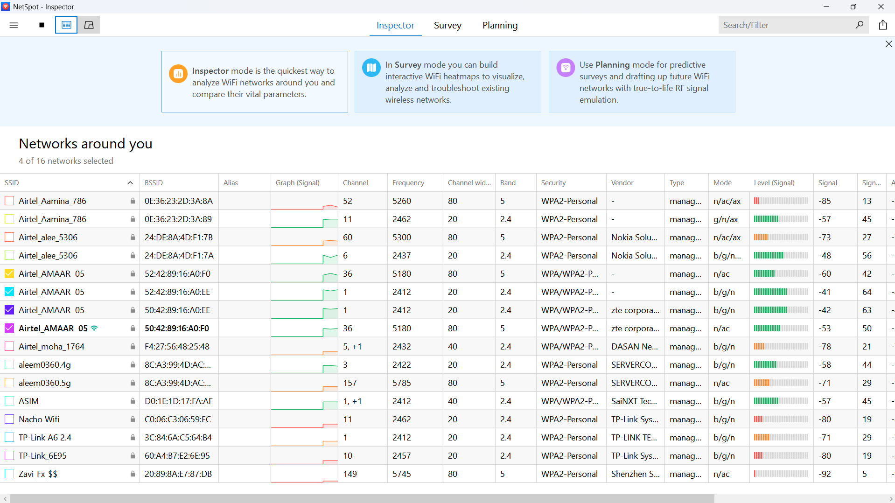
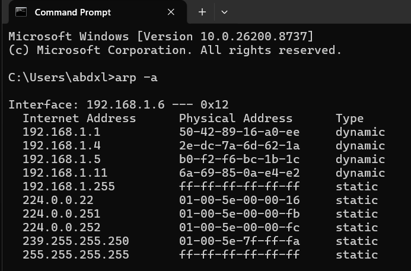
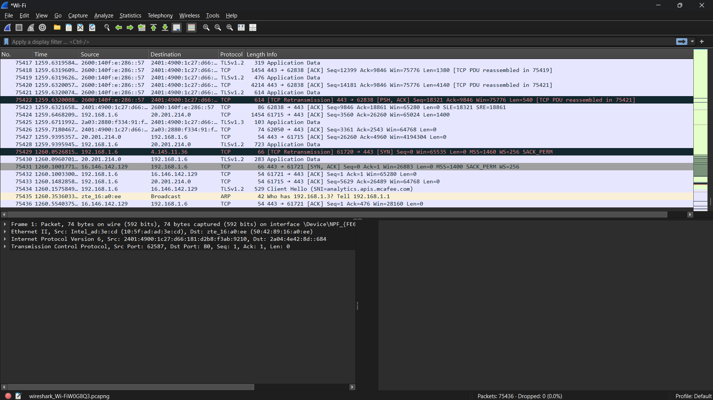

Wireless Network Security Assessment
Comprehensive Vulnerability & Rogue AP Audit
Confidential & Proprietary
1. Executive Summary
This document details the wireless security assessment conducted on the internal network segment. The audit prioritized mapping local Radio Frequency (RF) spaces, analyzing broadcasted configuration profiles, detecting unauthorized network hardware endpoints, and dissecting intercepted application layer traffic to map unencrypted channels.
Key Finding: No active WEP or unencrypted open SSIDs were located within the immediate corporate perimeter. However, multiple AP configurations utilize mixed-mode legacy architectures that support WPA (TKIP) and weak authentication handshakes, presenting key exposure risks.
2. Assessment Scope & Objectives
The primary objectives of the assessment were established as follows:
- Perform comprehensive RF scanning of all localized wireless networks.
- Evaluate encryption standards and identify outdated ciphers (WEP, TKIP).
- Profile internal connected network endpoints to detect potential rogue devices.
- Intercept wireless traffic locally to detect plaintext credentials or sensitive data transmission.
Scope Range: Subnet 192.168.1.0/24, localized RF environment targeting "Airtel_AMAAR 05".
3. Methodology
The operational framework utilized for this audit conforms to the NIST SP 800-153 guidelines for securing wireless networks. The phases include:
- Phase 1: RF Reconnaissance - Enumerate active SSIDs, signal levels, channel allocations, and cryptographic implementations.
- Phase 2: Local Subnet Sweeping - Interrogate local routing cache tables and map hardware MAC addresses of connected nodes.
- Phase 3: Deep Packet Inspection (DPI) - Analyze intercepted frames to identify plaintext application profiles (DNS queries, HTTP payloads).
4. Surrounding RF Environment & Wireless Network Enumeration
A comprehensive sweep using advanced RF scanning tools identified 16 active surrounding wireless access points. A catalog of the identified networks was successfully constructed to analyze perimeter congestion.

Figure 1.0: NetSpot RF scan detailing active SSIDs, BSSIDs, channel widths, and cryptographic profiles.
5. Cryptographic Cryptanalysis & Mixed Mode Vulnerability
An audit of the active encryption standards was performed to identify cryptographic downgrade paths:
| Encryption Protocol |
Count |
Risk Rating |
Technical Analysis |
| WEP / Open |
0 |
None |
No active WEP ciphers detected. Minimal direct access threats. |
| WPA2-Personal (AES) |
9 |
Low |
Secure configuration. Resilient to standard over-the-air exploits. |
| WPA/WPA2 Mixed Mode |
7 |
Medium |
Allows fallback to legacy WPA (TKIP). Open to downgrade attacks. |
6. Local Subnet Topology Discovery
Active device profiling was conducted utilizing local cache interrogations to identify active endpoints on the primary subnet space.

Figure 2.0: Subnet sweep demonstrating dynamic mapping of dynamic IP addresses to physical MAC signatures.
7. Deep Packet Interception & Traffic Forensics
Promiscuous mode frame capturing was initiated using Wireshark to intercept packets and test data transit security. The inspection successfully captured network handshakes, broadcast packets, and unencrypted application data.

Figure 3.0: Wireshark capture window analyzing OSI Layer 2 and Layer 3 telemetry, demonstrating dynamic protocol distribution.
8. Plaintext Exposure Proof of Concept
A controlled test payload was transmitted over plain HTTP (via `neverssl.com`) to evaluate network vulnerability. Wireshark successfully captured the plaintext payload, proving that a passive listener on the wireless segment could intercept client communications.
Technical Vulnerability Proof: Intercepted packets clearly contained browser version metadata, requested paths, and active connection characteristics without requiring cryptographic keys.
9. Vulnerability Risk Vector & CVSS v3.1 Matrix
Identified threats were scored based on the Common Vulnerability Scoring System (CVSS) v3.1 standard:
- Downgrade Path (WPA/WPA2 Mixed Mode):
Score: 5.4 (Medium) | Vector: `CVSS:3.1/AV:A/AC:L/PR:N/UI:N/S:U/C:L/I:L/A:N`
- Plaintext Transmission Exposure:
Score: 3.1 (Low) | Vector: `CVSS:3.1/AV:A/AC:H/PR:N/UI:N/S:U/C:L/I:N/A:N`
10. NIST CSF Control Mappings
To align this audit with corporate compliance policies, the findings and mitigations have been mapped to the NIST Cybersecurity Framework (CSF) v1.1:
- ID.AM-2: Physical devices and systems within the organization are inventoried (Fufilled via ARP topology sweeps).
- PR.DS-2: Data-in-transit is protected (Mitigated by migrating legacy ciphers to WPA3 and enforcing global HSTS).
- DE.CM-1: The network is monitored to detect potential cybersecurity events (Remediated by deploying Wireless IDS).
11. Strategic Defensive Remediation Plan
The following remediations should be prioritized immediately:
- Enforce Strict Cryptographic Standards: Transition all corporate wireless configurations to WPA2-AES (CCMP) minimum. Turn off mixed fallback modes.
- Configure AP Isolation: Implement Layer 2 Isolation on guest access routers to prevent client-to-client traffic sniffing.
- Implement WIDS: Configure automated monitors to flag deauthentication frames and Evil Twin SSIDs in real-time.
12. Technical Sign-Off & Attestation
The findings, data captures, and configurations documented within this assessment represent a realistic security audit of the defined scope. All analysis, logs, and screenshots are verified as accurate representation of the target wireless infrastructure.
Lead Assessor: ___________________________
IT Security Approval: ___________________________
-- End of Wireless Audit Security Document --